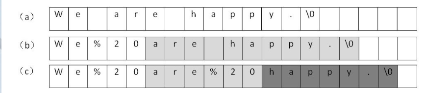
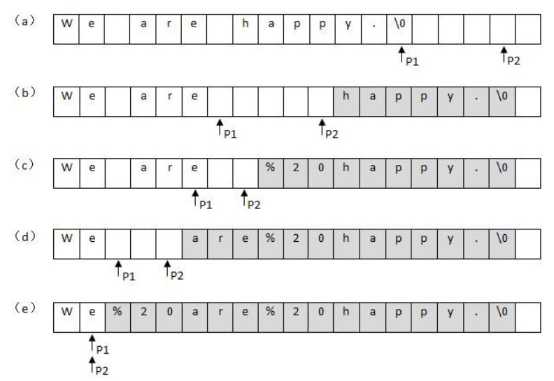

二维数组的查找
题目描述
在一个二维数组中（每个一维数组的长度相同），每一行都按照从左到右递增的顺序排序，每一列都按照从上到下递增的顺序排序。请完成一个函数，输入这样的一个二维数组和一个整数，判断数组中是否含有该整数。
思路
先把初始位置定位在二维数组的最右上角，当target比该位置值小时，将列指针减1，当比该位置值大时，则行指针加1，若找到则返回true，若没找到直至边界条件跳出返回false。
代码
public static boolean Find(int target, int[][] array) {
int row = 0;
int col = array[0].length-1;
while (row < array.length && col >= 0) {
if (target == array[row][col]) return true;
else if (target > array[row][col]) {
row++;
} else if (target < array[row][col]) {
col--;
}
}
return false;
}
替换空格
题目
请实现一个函数，将一个字符串中的每个空格替换成“%20”。例如，当字符串为We Are Happy.则经过替换之后的字符串为We%20Are%20Happy。
思路1
O(n^2)的做法。从头到尾扫描字符串，每一次碰到空格字符的时候做替换。由于是把1个字符替换成3个字符，我们必须要把空格后面所有的字符都后移两个字节，否则就有两个字符被覆盖了。下图展示了从前往后把字符串中的空格替换成’%20’的过程：

思路2
O(n)的做法。先遍历一次字符串，这样就能统计出字符串中空格的总数，并可以由此计算出替换之后的字符串的总长度。再从字符串的后面开始复制和替换。准备两个指针，P1和P2。P1指向原始字符串的末尾，而P2指向替换之后的字符串的末尾。接下来向前移动指针P1，逐个把它指向的字符复制到P2指向的位置，直到碰到第一个空格为止。接着向前复制，直到碰到第二、三或第n个空格。

###代码
上述思路讲的是具体的操作过程，如果用java写直接可以调用string类的方法，不过这样时间和空间复杂度比较大。
public String replaceSpace(StringBuffer str){
return str.toString().replaceAll(" ","%20");
}